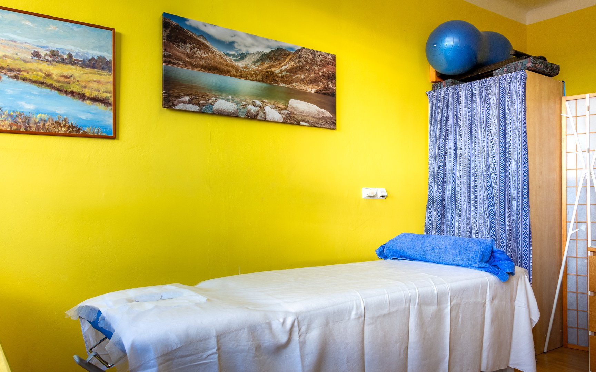
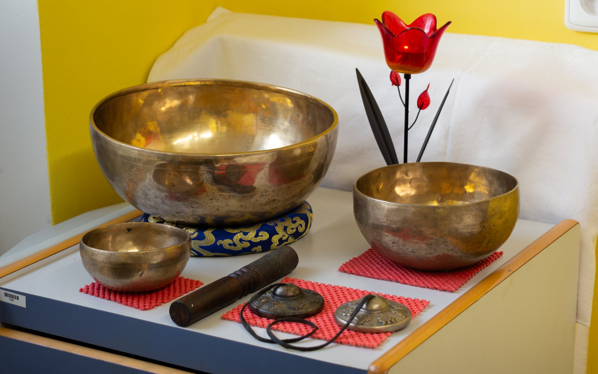
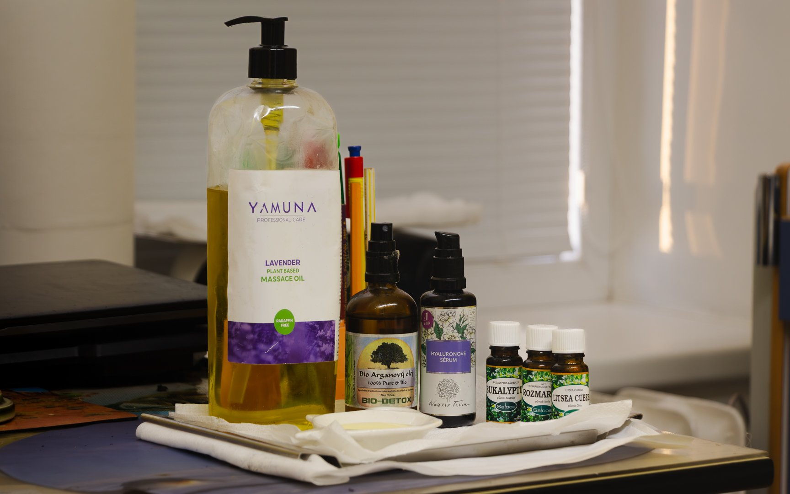

Klasické a speciální masáže, manuální lifting obličeje, zvukové lázně tibetských mís a další metody pro Vaši regeneraci a podporu zdraví.
Doteky jsou jednou z nejstarších forem léčení lidí.
Pravidelné a dobře prováděné masáže Vás zbaví napětí, které nám působí náročné úkoly v práci, ve škole, v rodině, neustálý tlak informací, narušených mezilidských vztahů, stres, spěch a další. Zatuhlé fascie v těle a napětí můžou způsobovat bolesti hlavy, špatnou hybnost ramen, zablokovanou některou část páteře nebo jiný zdravotní diskomfort.
Na masáž reagují nejen svaly tím, že zvláční a začnou se uvolňovat — zlepšuje se prokrvení tkání a ohebnost končetin. Povzbuzení krevního a lymfatického oběhu usnadňuje vylučování odpadních látek. Masáží se uvolní napětí i stres, osvěží tělo i mysl.
V den masáže je dobré dodržovat přiměřený pitný režim — cca 1,5 až 2 litry neperlivých tekutin. Před masáží alespoň 90 minut nejíst, a pokud je to možné, osprchovat se. Pro zvýšení relaxace probíhají masáže při relaxační hudbě, kdy se mozek naladí na léčivé hudební vibrace.
Po masáži je dobré strávit asi 60–120 minut relaxací v teple, bez náročné fyzické či psychické aktivity, popíjet čistou neperlivou vodu a být v klidu.
Tradiční regenerační masáž zaměřená na uvolnění napětí, zlepšení prokrvení a celkovou relaxaci. Pomáhá při bolestech hlavy, ztuhlosti ramen a zablokovaných partiích páteře.
Jemná masážní technika zaměřená na podporu funkce lymfatického systému. Regeneruje a detoxikuje tělo, zbaví je přebytečné vody a odpadních látek. Pomáhá při problémech s celulitidou, otoky, zlepšuje kvalitu pleti, posiluje imunitu. Lymfatický systém sbírá a transportuje z těla škodliviny — ať již získané z vnějšího prostředí, nebo jako odpadní produkty metabolismu.
Vychází z principu, že bolest v reflexní plošce je přímo úměrná dysfunkci v příslušném orgánu. Za pomoci tlaku a masírování reflexních bodů se stimulují reflexní dráhy a zlepšuje se činnost jednotlivých orgánů. Provádí se na rukou nebo na nohou.
Jemné a precizní ošetření celého obličeje s důrazem na uvolnění lymfy, tkání a hloubkovou revitalizaci kůže. Dobře působí na vrásky vzniklé únavou — zmenšuje je tím, že aktivuje výživu a zvyšuje tonus kůže.
Dochází k výraznému vyhlazení vrásek a kontur, uvolnění napětí obličeje a k podpoře imunitního systému. Jemným působením na mimické svaly dochází ke zmírnění únavy a příznivému ovlivnění nervové soustavy. Urychlení tkáňového metabolismu v kůži má za následek úbytek podkožního tuku. Povzbuzením krevního oběhu se zlepší oběhové poruchy, dýchání kůže a rychleji se odplaví odpadní látky. Dochází i k pozitivnímu očistnému působení na oko a oční okolí.
Při této masáži dochází díky medu k „vytahování" škodlivin z těla. Léčivá síla medu působí přes kůži do hlubších vrstev a přispívá k detoxikaci organismu, posílení imunity a úlevě od svalového napětí.
Tradiční metoda využívající podtlak baněk pro hluboké uvolnění tkání, povzbuzení prokrvení a odplavení odpadních látek. Vhodné při bolestech zad, ztuhlých svalech a chronickém napětí.
Východní metoda pracující s jadeitovou destičkou. Stimuluje krevní a lymfatický oběh, uvolňuje napětí ve fasciích, zlepšuje pružnost tkání a přináší úlevu od bolestí pohybového aparátu.
Cílené ošetření tzv. trigger pointů — bolestivých uzlíků ve svalech, které způsobují vyzařující bolest do dalších partií. Vhodné pro chronické bolesti zad, ramen, krku.
Harmonizace organismu a podpora regenerace těla, ducha i mysli jemnými zvukovými vibracemi tibetských mís. Tibetské mísy vyrobené z ušlechtilých kovů dle symboliky planet pomáhají při hře na ně stimulovat horní hranici theta vln mozku (4–8 Hz), doprovázející relaxovaný meditativní stav bez stresu.
Odstranění nahromaděné negativní energie oslabující organismus, vyčištění Vašeho biopole a podpora celkové harmonie těla i mysli.
Jemná a šetrná, neinvazivní metoda podpory regenerace těla. Vhodná u chronických bolestí, hojení ran a jako podpora imunitního systému.
Posílení energie Vašich buněk — mitochondrií, svalů, kostí, kloubů a orgánů. Šetrné, neinvazivní působení.
Nízkoúrovňová pulsní laserová terapie — vhodná jako doplněk k masáži pro hlubší účinek a urychlení regenerace.
Ošetření otoků, hematomů, bolestí pohybového ústrojí (obklady páteře, svalů, kloubů, končetin, krku), zánětů v těle, chemického zatížení kůže.
Účinky našich humátových zábalů: odevzdání odpadních látek do vnějšího prostředí kůží a vstřebávání látek do organismu. Dochází k prokrvení tkání, regeneraci namožených tkání, analgetickému přírodnímu efektu při bolestech, zpomalení stárnutí buněk, ochraně proti volným radikálům, pozitivnímu účinku na problémy s kůží (lupénka, ekzémy, akné, vyrážky, svědivé infekce), pomoci u zánětlivých stavů vnitřních orgánů přímým působením přes kůži.


